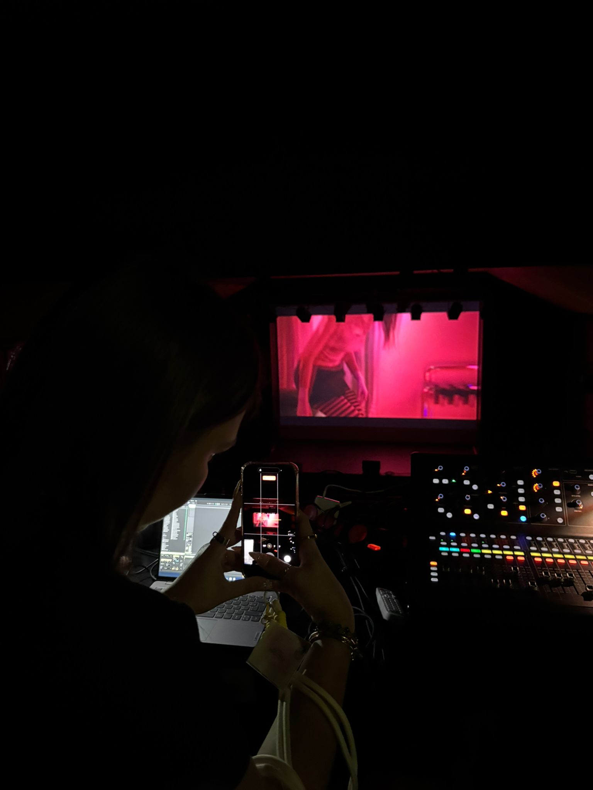
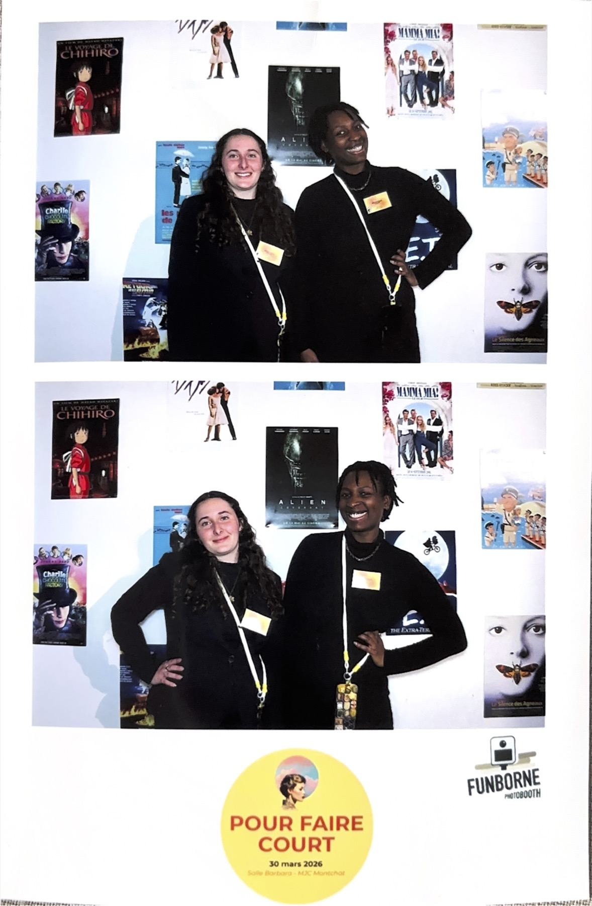

Context
Pour Faire Court is a short-film festival in its 9th edition, produced by students as part of the INSEEC master's programme. I co-led logistics for a one-night event welcoming an audience, guests and speakers on site.
My role
As logistics co-lead, I owned the venue, the technical setup, the suppliers and the run of show. Of the festival's €5,000 total budget, €3,500 was allocated to logistics and split across both leads: we validated each other's spending decisions as we went, rather than discovering a conflict the week before the event.
What I did
- Booked the venue and coordinated the technical setup and equipment.
- Sourced and briefed suppliers, and built the full run of show for the evening.
- Co-managed the €3,500 logistics budget across two leads, with joint sign-off on spending decisions.
- Co-led a 10-person volunteer crew on the day: briefing, role allocation and real-time problem-solving.
- Welcomed 100 attendees, guests and speakers on site.
The hard parts
Half the planned budget was frozen mid-project
We planned against €10,000; half was frozen while sourcing was already under way, leaving €5,000 for the whole festival. The team rebuilt the funding through four channels — an institutional negotiation I took part in, a donation drive, private contributions and a prize raffle, for which I sourced prizes from local retailers. I then re-scoped venue and suppliers against what was actually left.
A private hire that wasn't private
The contract covered the auditorium, the cocktail room and the adjoining corridor, but the public kept circulating through our space on the night. I negotiated access restrictions with the venue on the spot. I now plan for door staff even when the brief says they aren't required.
The run of show broke during the event
A schedule change upstream pushed the cocktail service out of sequence. We rewrote the running order live and closed on time. Since then I keep one crew member unassigned — a floater whose only job is to absorb what the plan didn't predict.
Key numbers
Visuals


What I took away
A one-night event gives you no second chance — the whole result rides on the preparation. I learned to build a run of show detailed enough that ten people could act on it without us having to hover.